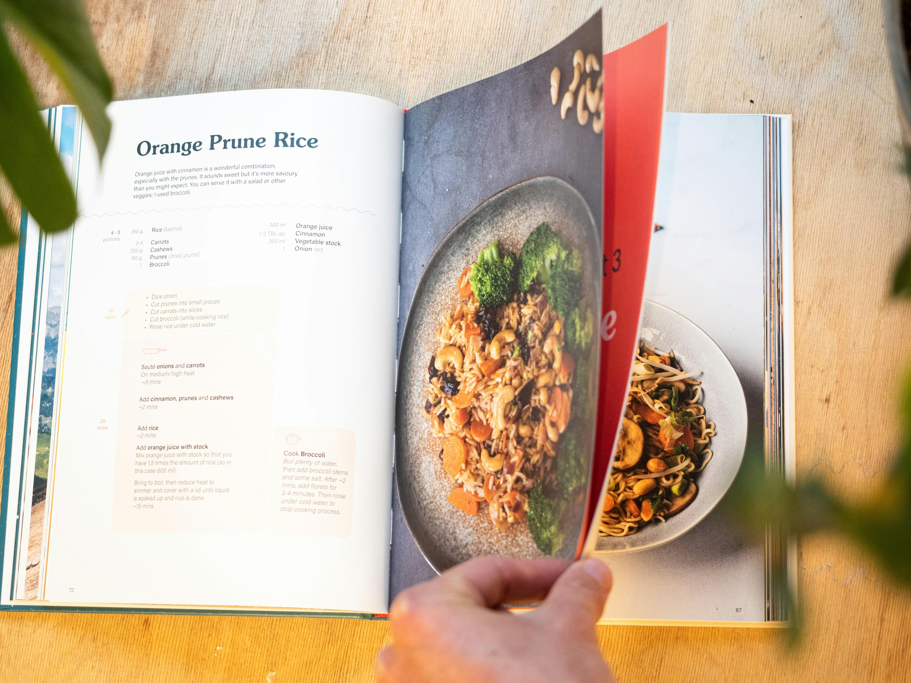

Hamburguesa con patatas
Imagen

Vídeo
Descripción
Esta receta combina una jugosa hamburguesa casera con el toque crujiente de las patatas asadas, creando un plato delicioso y fácil de preparar. Perfecto para una comida satisfactoria y llena de sabor.
Categoría
Carnes
Tiempo
45 minutos
Ingredientes
- 500g de carne molida de res
- 1 huevo
- 50g de pan rallado
- 2 dientes de ajo picados
- 1 cucharadita de mostaza
- Sal al gusto
- Pimienta al gusto
- 4 panes de hamburguesa
- 4 lonchas de queso cheddar
- 100g de lechuga
- 1 tomate grande en rodajas
- 1 cebolla en rodajas
- 2 cucharadas de aceite de oliva
- 500g de patatas
- 1 cucharadita de pimentón
Pasos
- Preparar la carne: En un bol, mezcla la carne molida, el huevo, el pan rallado, el ajo picado, la mostaza, la sal y la pimienta. Forma 4 hamburguesas del mismo tamaño.
- Cocinar las patatas: Lava y corta las patatas en gajos. Mézclalas con 1 cucharada de aceite de oliva, sal, pimienta y pimentón. Hornéalas a 200°C durante 30-35 minutos hasta que estén doradas y crujientes.
- Cocinar las hamburguesas: Calienta 1 cucharada de aceite de oliva en una sartén a fuego medio-alto. Cocina las hamburguesas durante 4-5 minutos por cada lado o hasta que estén bien doradas. En los últimos minutos, coloca una loncha de queso cheddar sobre cada hamburguesa para que se derrita.
- Montar la hamburguesa: Tuesta ligeramente los panes de hamburguesa. Coloca en la base del pan la lechuga, una rodaja de tomate, la hamburguesa con queso y las rodajas de cebolla. Tapa con la parte superior del pan.
- Servir: Acompaña las hamburguesas con las patatas asadas y disfruta de una comida deliciosa.
Te puede interesar...

